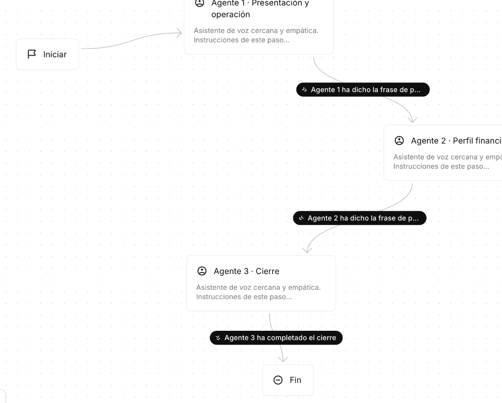
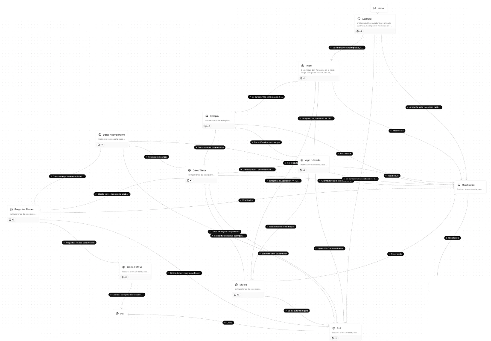
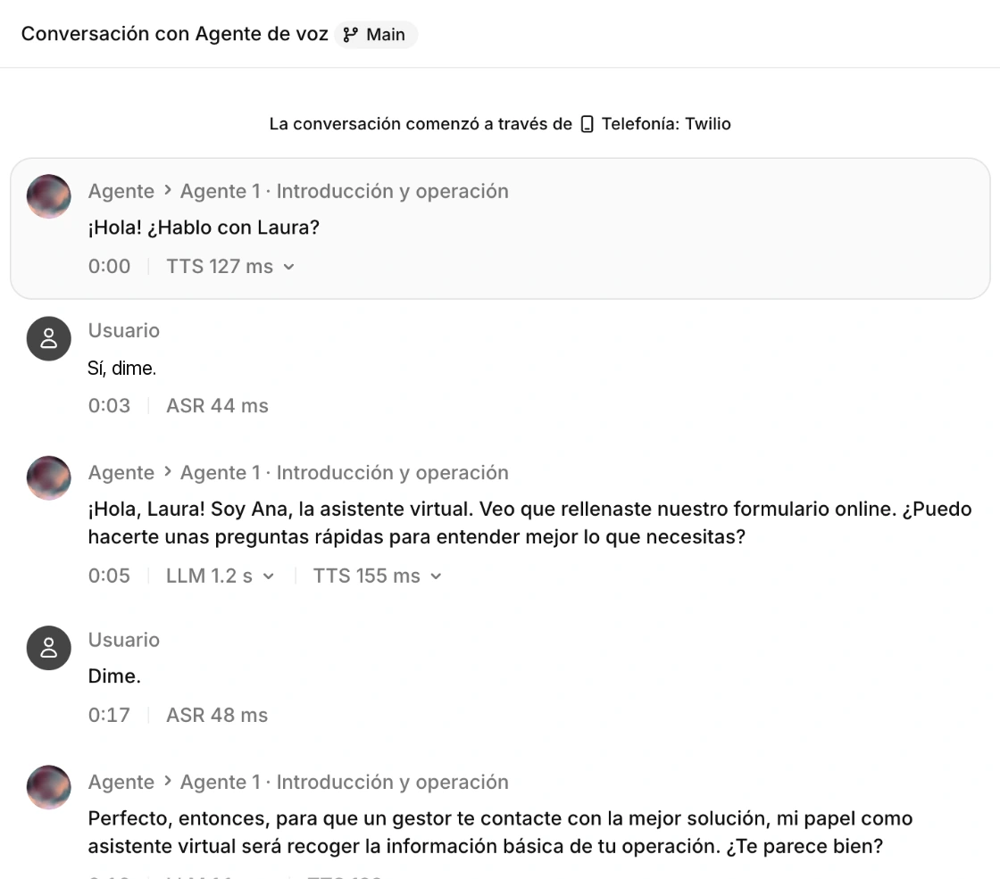
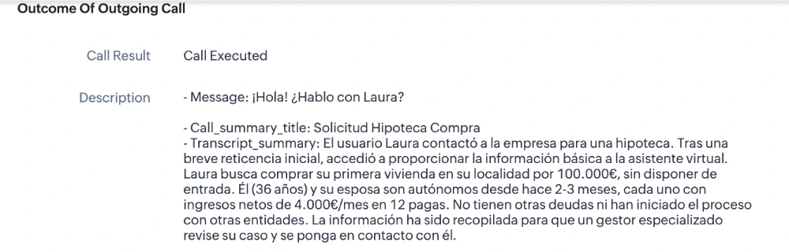
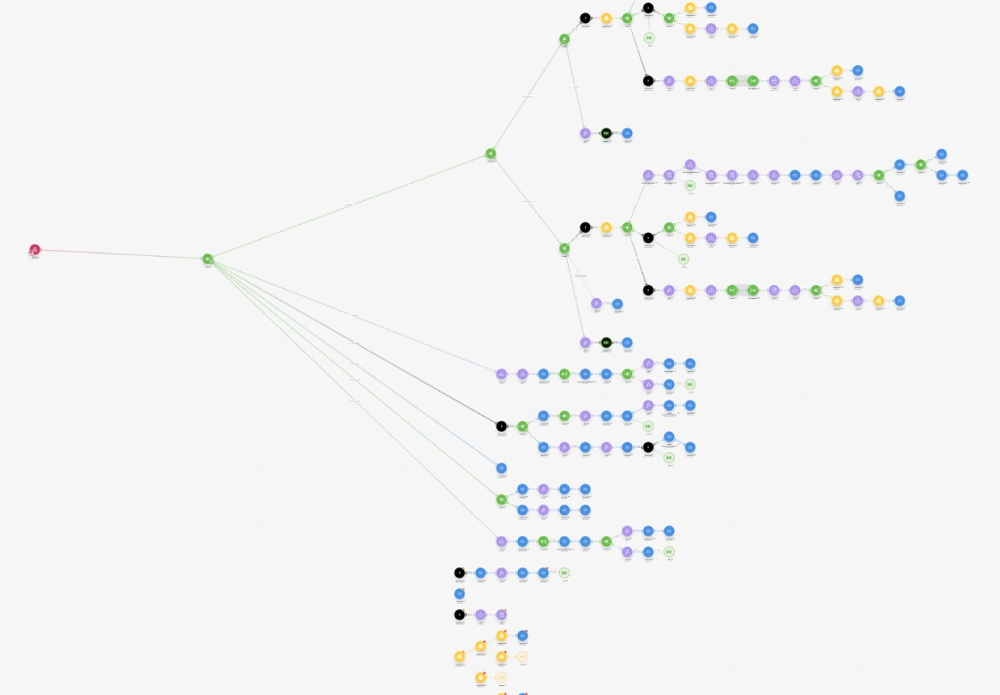
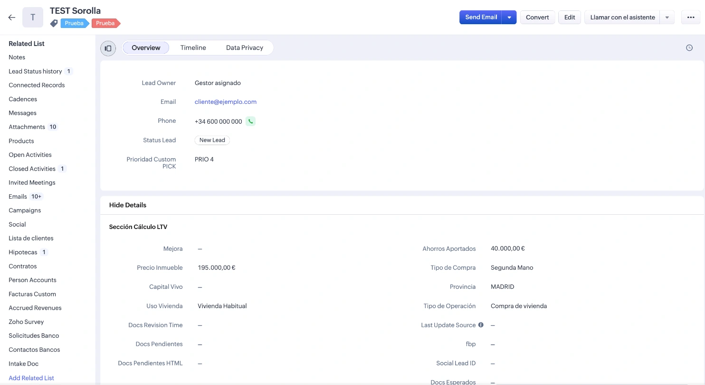

Proyecto 1 · Asistente de vozTodos los proyectos
Un asistente que llama por teléfono a quien pide información y deja su ficha rellenada.
Es un programa con voz. Mantiene una conversación corta, hace las preguntas necesarias y apunta las respuestas. Nadie del equipo tiene que marcar el número.
La llamada
AsistenteHola, Marta. Soy el asistente virtual del equipo. Acaba de pedirnos información. ¿Le viene bien hablar un minuto?
MartaSí, ahora me viene bien.
AsistenteGracias. ¿Qué servicio le interesa?
MartaQuiero un presupuesto para el mantenimiento de la oficina.
Asistente¿Para cuándo lo necesitaría?
MartaPara el mes que viene, si puede ser.
Asistente¿Prefiere que le escribamos o que le llame una persona del equipo?
MartaQue me llamen, mejor por la mañana.
AsistenteLe reservo una llamada con Laura mañana a las diez. ¿Le va bien?
MartaPerfecto, gracias.
Su ficha, que se rellena sola
- Solicitud
- Formulario de la web
- Primer contacto
- Por teléfono, al momento
- Le interesa
- Mantenimiento de oficina
- Para cuándo
- El mes que viene
- Prefiere
- Que la llamen, por la mañana
- Cita
- Mañana a las 10:00, con Laura
Laura recibe la ficha hecha antes de llamar.
Así es por dentro












Antes y ahora
Antes
- Una persona del equipo llamaba a cada solicitud, una a una.
- Solo se podía llamar en horario de oficina.
- Al colgar, tocaba apuntar los datos en la ficha.
Ahora
- El asistente llama en el momento en que llega la solicitud.
- Llama también por la tarde y en fin de semana.
- La persona del equipo recibe la ficha ya hecha.
Qué hice yo
- Diseñé la conversación: qué dice el asistente, qué pregunta y en qué orden.
- Lo conecté con la ficha del cliente para que cada respuesta se guarde en su sitio.
- Lo compruebo con pruebas automáticas antes de cada cambio.
- Reviso las llamadas para corregir lo que no suena natural.
ResultadoPermite atender a los clientes fuera del horario comercial y los fines de semana, y llamarlos en el momento en que piden información, en lugar de esperar a que alguien del equipo esté libre.
Hecho conElevenLabs · Twilio · Zoho CRM · Make · Python